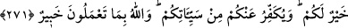

bağlı bütün adaklarınızı bilir.
“Nezr”, gönlü bir şeye bağlayıp onu yapmaya karar vermektir. Şerîatte ise nezr, dinde
benzeri olan bir iyiliği kendine vâcib kılmaktır. Bu sebeple, tek bir secde yapmayı
nezredenin nezri sahîh değildir. Ancak İmam Ebû Hanîfe ve talebelerine göre nezredilen
tek secde tilâvet için olursa câizdir.
Allah bütün bunları bilir ve muhakkak sûrette bunları hesâba katarak karşılığını verir.
Eğer hayır işlemişseniz âkıbetiniz hayırlı olur. Eğer şer işlemişseniz âkıbetiniz kötü
olur. Âyet-i kerîme, hem terğib, hem terhib, hem vâd ve hem de vaîdi ihtiva etmektedir.
Mâsiyet için infâk etmek veya mâsiyet için nezir yapmak, sadakaya mâni olmak, nezri
yerine getirmemek, kötü şeyleri infâk etmek, riyâ için eziyet ve minnetle infâk etmek
gibi herhangi bir şekilde zulmedenlerin, kendilerini Allah’ın azabından koruyacak
hiçbir yardımcıları yoktur.
Zulüm, bir şeyi uygun olmayan yere koymaktır. Zulmedenler için ne bir şefâat, ne de
bir müdâfaa söz konusudur.
271. Eğer sadakaları (zekât ve benzeri hayırları) açıktan verirseniz ne âlâ! Eğer
onu fakirlere gizlice verirseniz, işte bu sizin için daha hayırlıdır. Allah da bu sebeple
sizin günahlarınızı örter. Allah, yapmakta olduklarınızı bilir.
Riyâ ve süm’a olmadığı sürece sadakaları açıktan vermek güzeldir. Ancak bu durum
zekât gibi farz olan sadakalara mahsûstur. Nâfile sadakalarda ise gizli olması daha
iyidir. “Eğer onu gizlice fakirlere verirseniz daha hayırlıdır” ifâdesi bunu
göstermektedir. Sadakayı açıkça verirken de fakîrlere vermek gerekir. Bununla beraber
gizli bir şekilde verilen sadakanın özellikle fakîrlere verilmesinin vurgulanması şunun
içindir: Gizli şeylerde daima karışıklık ve şüphe söz konusudur. Bazan zengin biri bile
fakir olduğunu söyleyerek gizlice sadaka almaya yeltenebilir. Halbuki bunu insanların
yanında yapamaz. Nâfile sadakayı gizli vermek açıkça vermekten daha hayırlıdır. Niyet
sahîh olduğu takdirde hepsi de kabûle şayandır. Zengin olduğu bilinmeyen kişinin
sadakasında da durum aynıdır. Fakat vâcib olanlarda ise, başkalarını da hayra delâlet
etme bakımından açıkça vermek daha fazîletlidir. Meselâ farz olan namazı cemâatle,
nâfileyi ise evde kılmak daha iyidir. Diğer taraftan farz olan zekatı açıktan vermek kişiyi
töhmet altında kalmaktan ve hakkında kötü zan beslenilmesinden korur. Fakat zekât
veren kişinin bolluk sâhibi, varlıklı biri olduğu bilinmiyorsa, onun gizli vermesi daha
güzeldir.
İbn Abbas (r.a.)’dan yapılan bir rivayete göre: “Gizli verilen nâfile sadaka açıkça
verilenden yetmiş derece daha sevaplıdır. Açıkça verilen farz bir sadaka ise gizli